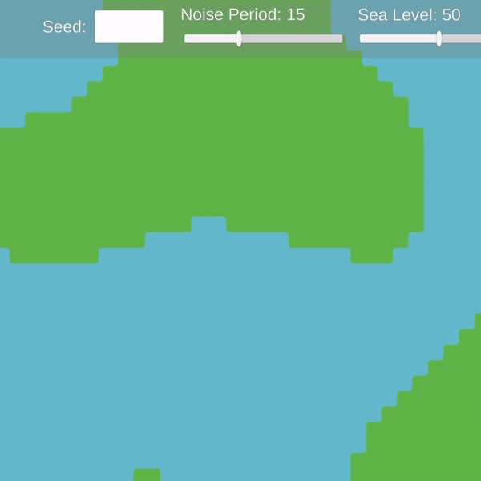

Perlin Noise
Perlin Noise is a specific type of random number generator whose values have continuity and don't jump all over the place. We can think of many applications of Perlin noise but the most interesting example is terrain generation, like the noise generator used in Minecraft.Inside-Outside
At DigiPen's CS380 - Artificial Intelligence for Game taught by Steve Rabin, we learned the concept of Inside-Outside; usually, a tilemap will place its tiles on top of each vertex, but it is actually more useful to place the tiles between vertices. This tileset we created demonstrates how, by placing tiles in between vertices, we now have the power to draw the land/water border however we like.Connecting the Dots
We now have Perlin noise generation capability and the tileset to represent its values. In order to hook them up, the noise value at each vertex is converted to either 1 if it exceeds the Sea Level and 0 if it does not. Then, each tile position can parse its four vertices' values as a binary number between 0000-1111 (0-15 in decimal) and display the appropriate tile.Noise Period
The sampling points (per se) of the Perlin noise generator can be close together or far apart. This can generate fine or coarse landscape features.Sea Level
The Perlin noise values here are analogous to altitude, and depending on how much water there is, certain features can be flooded or uncovered. Here is a GIF that demonstrates this cool capability.
